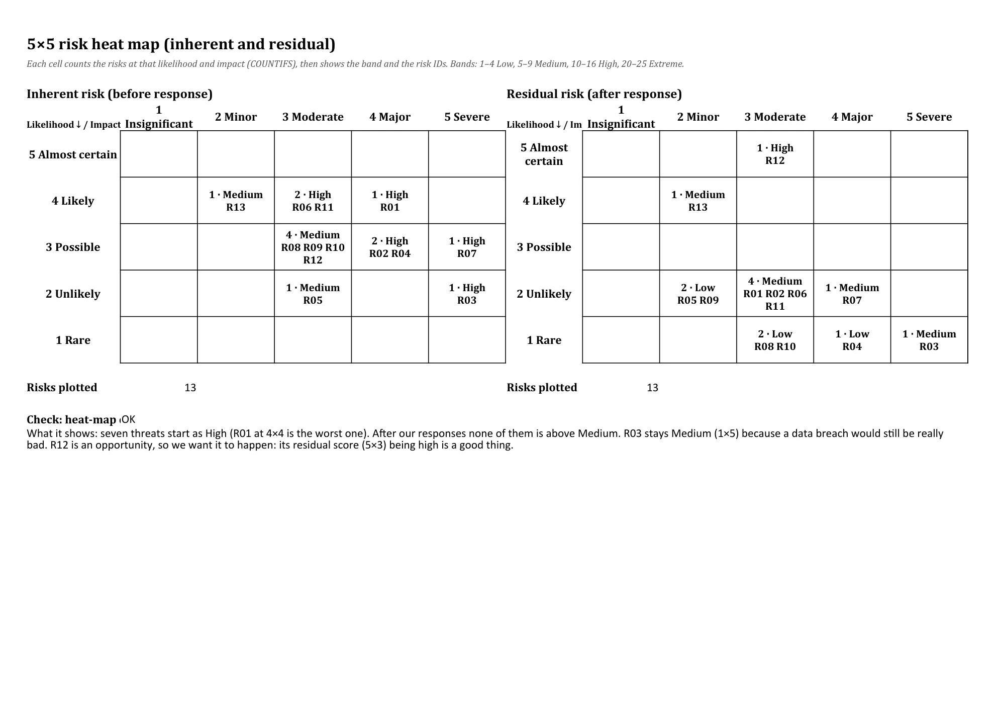
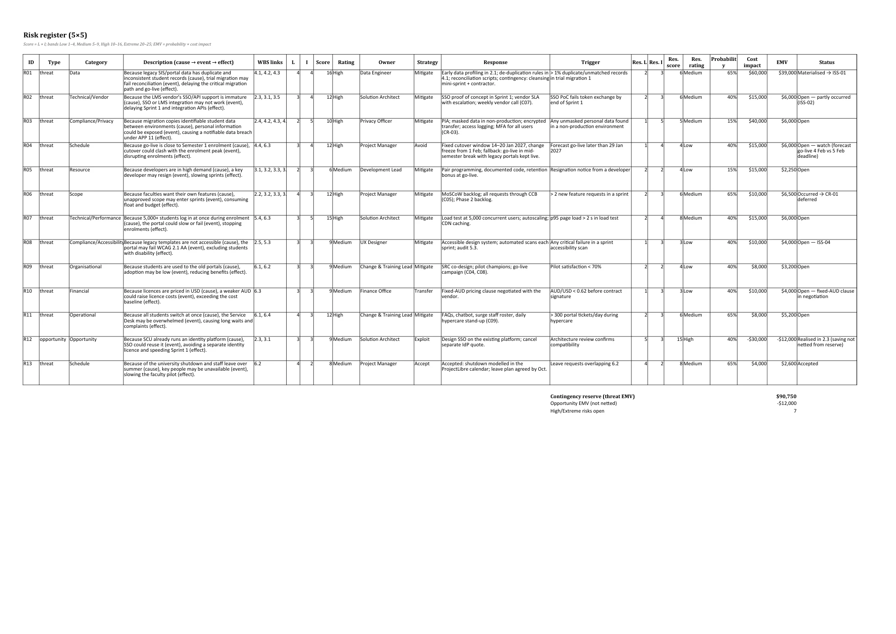

Page 5
Risk management
Purpose: Show how risks were scored, where they sit, and how responses fund and protect the plan.
Scoring approach
| L | Likelihood | Probability |
|---|---|---|
| 1 | Rare | < 10% |
| 2 | Unlikely | 10–30% |
| 3 | Possible | 30–50% |
| 4 | Likely | 50–80% |
| 5 | Almost certain | > 80% |
| I | Impact | Cost | Schedule | Other |
|---|---|---|---|---|
| 1 | Insignificant | < $5k | < 2 days | No external visibility |
| 2 | Minor | $5k–15k | 2–5 days | Internal complaints |
| 3 | Moderate | $15k–40k | 1–2 weeks | Student complaints; SRC attention |
| 4 | Major | $40k–100k | 2–4 weeks; milestone missed | Media/regulator enquiry |
| 5 | Severe | > $100k | > 4 weeks; go-live deadline missed | Notifiable data breach; TEQSA action |
Score = L × I. Bands: Green Low 1–4 · Medium 5–9 · High 10–16 · Red Extreme 20–25. EMV = probability × cost impact.
Heat maps

A2_GroupXX_ProjectData.xlsx › Risk_Heatmap_5x5.High risks
| ID | Risk (cause → event → effect) | WBS | Score | Owner | Strategy & response | Trigger | Residual | EMV |
|---|---|---|---|---|---|---|---|---|
| R01 | Because legacy SIS/portal data has duplicate and inconsistent student records (cause), trial migration may fail reconciliation (event), delaying the critical migration path and go-live (effect). | 4.1, 4.2, 4.3 | 16 High | Data Engineer | Mitigate: Early data profiling in 2.1; de-duplication rules in 4.1; reconciliation scripts; contingency: cleansing mini-sprint + contractor. | > 1% duplicate/unmatched records in trial migration 1 | 6 (Medium) | $39,000 |
| R02 | Because the LMS vendor's SSO/API support is immature (cause), SSO or LMS integration may not work (event), delaying Sprint 1 and integration APIs (effect). | 2.3, 3.1, 3.5 | 12 High | Solution Architect | Mitigate: SSO proof of concept in Sprint 1; vendor SLA with escalation; weekly vendor call (C07). | SSO PoC fails token exchange by end of Sprint 1 | 6 (Medium) | $6,000 |
| R03 | Because migration copies identifiable student data between environments (cause), personal information could be exposed (event), causing a notifiable data breach under APP 11 (effect). | 2.4, 4.2, 4.3, 4.4 | 10 High | Privacy Officer | Mitigate: PIA; masked data in non-production; encrypted transfer; access logging; MFA for all users (CR-03). | Any unmasked personal data found in a non-production environment | 5 (Medium) | $6,000 |
| R04 | Because go-live is close to Semester 1 enrolment (cause), cutover could clash with the enrolment peak (event), disrupting enrolments (effect). | 4.4, 6.3 | 12 High | Project Manager | Avoid: Fixed cutover window 14–20 Jan 2027, change freeze from 1 Feb; fallback: go-live in mid-semester break with legacy portals kept live. | Forecast go-live later than 29 Jan 2027 | 4 (Low) | $6,000 |
| R06 | Because faculties want their own features (cause), unapproved scope may enter sprints (event), consuming float and budget (effect). | 2.2, 3.2, 3.3, 3.4 | 12 High | Project Manager | Mitigate: MoSCoW backlog; all requests through CCB (C05); Phase 2 backlog. | > 2 new feature requests in a sprint | 6 (Medium) | $6,500 |
| R07 | Because 5,000+ students log in at once during enrolment (cause), the portal could slow or fail (event), stopping enrolments (effect). | 5.4, 6.3 | 15 High | Solution Architect | Mitigate: Load test at 5,000 concurrent users; autoscaling; CDN caching. | p95 page load > 2 s in load test | 8 (Medium) | $6,000 |
| R11 | Because all students switch at once (cause), the Service Desk may be overwhelmed (event), causing long waits and complaints (effect). | 6.1, 6.4 | 12 High | Change & Training Lead | Mitigate: FAQs, chatbot, surge staff roster, daily hypercare stand-up (C09). | > 300 portal tickets/day during hypercare | 6 (Medium) | $5,200 |
Full register
Show all 13 risks
| ID | Category | Description | Inherent | Rating | Owner | Strategy | Residual | EMV | Status |
|---|---|---|---|---|---|---|---|---|---|
| R01 | Data | Because legacy SIS/portal data has duplicate and inconsistent student records (cause), trial migration may fail reconciliation (event), delaying the critical migration path and go-live (effect). | 4×4=16 | High | Data Engineer | Mitigate | 2×3=6 | $39,000 | Materialised → ISS-01 |
| R02 | Technical/Vendor | Because the LMS vendor's SSO/API support is immature (cause), SSO or LMS integration may not work (event), delaying Sprint 1 and integration APIs (effect). | 3×4=12 | High | Solution Architect | Mitigate | 2×3=6 | $6,000 | Open — partly occurred (ISS-02) |
| R03 | Compliance/Privacy | Because migration copies identifiable student data between environments (cause), personal information could be exposed (event), causing a notifiable data breach under APP 11 (effect). | 2×5=10 | High | Privacy Officer | Mitigate | 1×5=5 | $6,000 | Open |
| R04 | Schedule | Because go-live is close to Semester 1 enrolment (cause), cutover could clash with the enrolment peak (event), disrupting enrolments (effect). | 3×4=12 | High | Project Manager | Avoid | 1×4=4 | $6,000 | Open — watch (forecast go-live 4 Feb vs 5 Feb deadline) |
| R05 | Resource | Because developers are in high demand (cause), a key developer may resign (event), slowing sprints (effect). | 2×3=6 | Medium | Development Lead | Mitigate | 2×2=4 | $2,250 | Open |
| R06 | Scope | Because faculties want their own features (cause), unapproved scope may enter sprints (event), consuming float and budget (effect). | 4×3=12 | High | Project Manager | Mitigate | 2×3=6 | $6,500 | Occurred → CR-01 deferred |
| R07 | Technical/Performance | Because 5,000+ students log in at once during enrolment (cause), the portal could slow or fail (event), stopping enrolments (effect). | 3×5=15 | High | Solution Architect | Mitigate | 2×4=8 | $6,000 | Open |
| R08 | Compliance/Accessibility | Because legacy templates are not accessible (cause), the portal may fail WCAG 2.1 AA (event), excluding students with disability (effect). | 3×3=9 | Medium | UX Designer | Mitigate | 1×3=3 | $4,000 | Open — ISS-04 |
| R09 | Organisational | Because students are used to the old portals (cause), adoption may be low (event), reducing benefits (effect). | 3×3=9 | Medium | Change & Training Lead | Mitigate | 2×2=4 | $3,200 | Open |
| R10 | Financial | Because licences are priced in USD (cause), a weaker AUD could raise licence costs (event), exceeding the cost baseline (effect). | 3×3=9 | Medium | Finance Office | Transfer | 1×3=3 | $4,000 | Open — fixed-AUD clause in negotiation |
| R11 | Operational | Because all students switch at once (cause), the Service Desk may be overwhelmed (event), causing long waits and complaints (effect). | 4×3=12 | High | Change & Training Lead | Mitigate | 2×3=6 | $5,200 | Open |
| R12 | Opportunity | Because SCU already runs an identity platform (cause), SSO could reuse it (event), avoiding a separate identity licence and speeding Sprint 1 (effect). | 3×3=9 | Medium | Solution Architect | Exploit | 5×3=15 | -$12,000 | Realised in 2.3 (saving not netted from reserve) |
| R13 | Schedule | Because of the university shutdown and staff leave over summer (cause), key people may be unavailable (event), slowing the faculty pilot (effect). | 4×2=8 | Medium | Project Manager | Accept | 4×2=8 | $2,600 | Accepted |

A2_GroupXX_ProjectData.xlsx › Risk_Register.R01: from risk to issue
R01 (legacy data quality) scored 16: likely, with a major schedule impact on the critical path. Early profiling sampled only 5% of records, so the mitigation partly failed and the trigger fired in trial migration 1. R01 became ISS-01 and its $39,000 contingency allocation now funds CR-02. Residual R01 drops to 6 once cleansing rules and a second trial are in place (PMI, 2021).